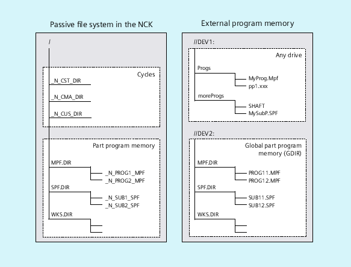

In addition to the passive file system in the NC, external program memories can also be available at the machine (e.g. on the local drive or on a network drive).
Using the functions "Execute from external" or "EES (Execution from External Storage)" part programs can be directly executed from external program memories.
Further information: Function Manual Basic Functions
When declaring the drives, one of the drives can be designated the global part program memory (GDIR).
The system automatically creates the MPF.DIR, SPF.DIR and WKS.DIR directories on the drive. These three directories form the GDIR.
The GDIR only plays a role for the EES function. Depending on the drive configuration, the GDIR replaces or extends the NC part program memory. The creation of a GDIR is, however, not essential for EES operation.
The directories and files of the GDIR can be addressed in the part program in the same way as in the passive file system. This permits a compatible transfer of an NC program with path details from the passive file system to the GDIR. The directory SPF.DIR of the GDIR is contained in the search path for subprograms.
The program organization on external program memories is shown in the following diagram:
| Note |
To avoid problems with case-sensitivity for the file addressing (see "Addressing program memory files"), case-insensitive file systems should be used as external program memory. |
See also:
Program memory in the NCK